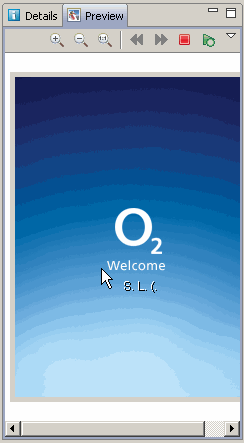

Customizing Graphical Elements
Customizing Home Screen
Situation: You want to customize the home screen.
-
Click main category UI

- Modify the Active Idle etc. settings.
Customizing Application Menu
Situation: You want to customize the Application Menu.
-
Click main category UI
- Select the Application Shell group and modify its settings.
Customizing Startup and Shutdown Graphics
Situation: You want to check or modify the Startup or Shutdown Graphics.
- Click the Startup or Shutdown animation folder in the Resources.
- You see the animation settings (audio, duration...) in the proposal form editor pane, and the details and preview in respective panes.
- When you click the animation folder open in the Resources, Carbide.v lists the images that the animation consists of.
- You may change the individual images of the animation or delete or import images.
The animation preview and its controls is displayed as follows:
